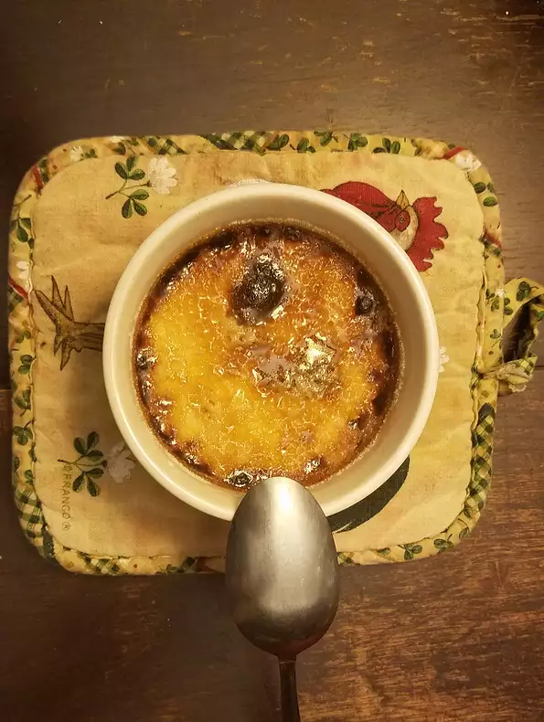

Creme Brulee

Description
Good ole eggs, cream, sugar and vanilla extract made into a custard.
Ingredients
- 3 tablespoons of white sugar
- 1 cup of heavy cream
- 3 egg yolks
- 1/4 teaspoon vanilla extract
- 2 tablespoons white sugar, divided
Steps
- Preheat oven to 350 degrees F (175 degrees C).
- Whisk 3 tablespoons of sugar and cream in a microwave-safe bowl until
well combined; heat the mixture in a microwave until warm, about 1 to 2
minutes, and whisk again to dissolve the sugar. Whisk in egg yolks and
vanilla extract until smooth.
- Pour the cream mixture into two ramekins and set them in a roasting pan.
Pour hot water into the roasting until it reaches halfway up the sides of
the ramekins
- Bake in the preheated oven until creme desserts are set but still
slightly jiggly when shaken, about 50 minutes. Remove ramekins from hot water
and chill in refrigerator until cold, at least 2 hours.
- Sprinkle 1 tablespoon of sugar evenly over the top of each dessert. Use a
kitchen torch to lightly toast and melt the sugar topping until brown and
bubbly, about 30 seconds. Let the sugar topping cool before serving. To
serve, use a spoon to crack the crisp sugar open to reveal the creamy
dessert underneath.